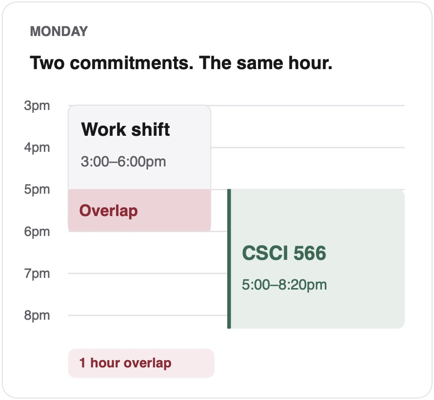
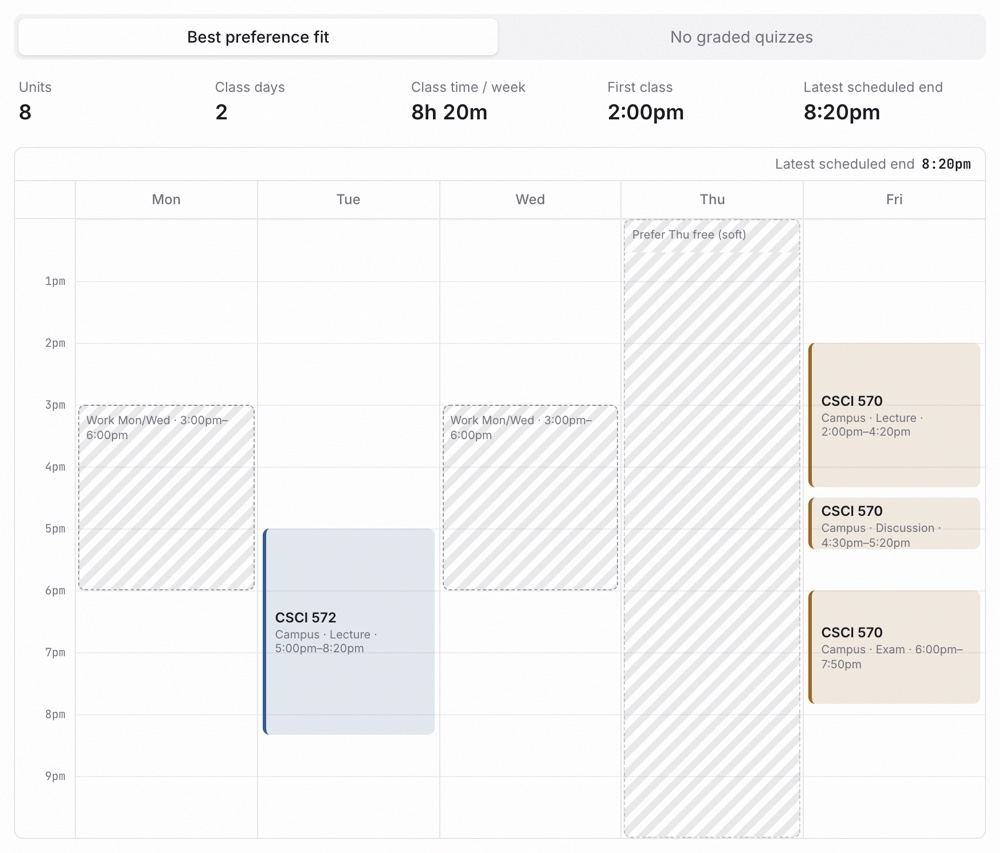
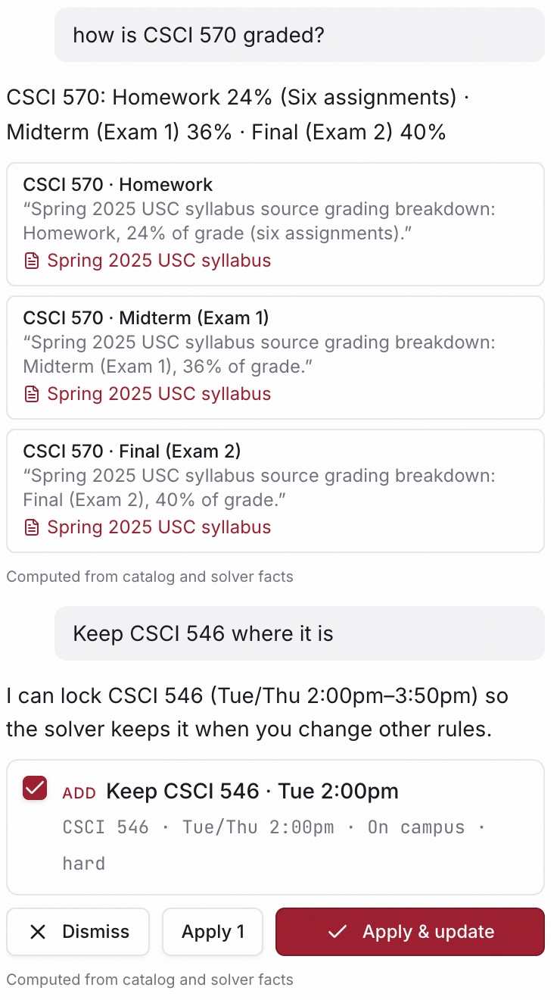
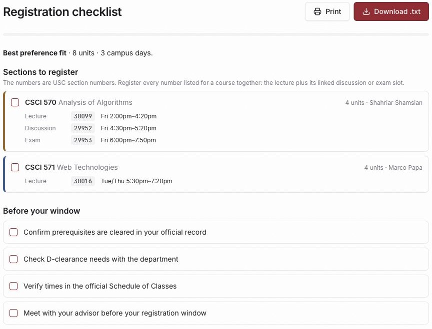

Synopsis
The problem. Registration is a puzzle: lectures, discussions and exam slots have to fit around work and prerequisites. When nothing fits, students rarely know which rule caused it.
What I built. I led the project, designing the product, the system architecture and the course-data pipeline. I built most of the copilot and explanation layer, the grading model, and parts of the interface and solver. Teammates built the first prototype and solver, and implemented the course sync. We used AI coding tools throughout.
- Rules in plain English: say when you work or what to avoid, then review each proposed rule before it applies.
- Answers you can check: grading answers link to their syllabus source, and schedule explanations come from catalog and solver facts.
- A way out of conflicts: the planner names the rules that clash and previews a change it has already re-solved.
The results.
- A working full-stack prototype, about 11 hours from first commit to last.
- Up to three distinct schedules for each request, each independently validated.
- 15 real Spring 2027 graduate CS courses, with lecture, lab, discussion and exam times.

Two commitments. The same hour.
Your required class overlaps your job. On Monday, a 3:00–6:00pm work shift and CSCI 566 at 5:00–8:20pm overlap by one hour. Fictional student, published Spring 2027 class time.

A schedule that fits your life.
AI interprets the request. You approve the rule. Google OR-Tools CP-SAT then builds the week from real USC lecture, lab, discussion and quiz combinations, and independent code checks the result.

Every grading answer shows its source.
Thirteen courses link to real USC-hosted syllabi. Past-term syllabi stay dated, and demo data stays labeled. No hard constraint changes without approval: the copilot proposes, and you choose Apply or Dismiss.

Know what fits before registration.
Leave with the exact sections to register, as a printable checklist or a text export.
Engineering
Start from real course data
I specified the data pipeline: fetch USC's public Schedule of Classes once, cache it as JSON with a retrieval time, and map linked lectures, discussions and exam slots into the planner. A teammate implemented the sync. I added the grading-breakdown model and merged the real catalog into the copilot and solver.
Let code answer what code can
I route requests through deterministic handlers first. Degree progress, grading lookups, excluding a course, locking a section and switching options don't need a model. Open-ended requests go to Claude.
Treat scheduling as a constraint problem
A Python worker uses OR-Tools CP-SAT to pick sections under time, unit and prerequisite rules. I extended the team's solver with course exclusions, planning goals that yield when units are tight, and alternatives that differ in courses or meeting times rather than section numbers.
Verify before showing
A separate TypeScript validator rechecks solver output against the catalog and hard rules. A timeout is reported as unknown, never as impossible.
Explain the conflict
When no schedule exists, the solver narrows the hard rules to a conflicting set and tests one-rule repairs. The student previews a repair and decides whether to apply it.
The AI part
Claude turns open-ended requests into structured rules, which are schema-checked and then confirmed by the student. It doesn't generate schedules.
When a student asks in chat why a course is in the plan, Claude rephrases computed facts. A token check rejects some new numbers and course codes but can't verify meaning, so the computed facts are always shown below. The Explain buttons show computed text without calling Claude.
Results & limits
TrojanPlanner is a hackathon prototype, not a registration or degree-audit tool. It uses a cached course snapshot without seat availability, planning goals are illustrative, and two of the 15 syllabi are labeled mocks. Other grading details come from past terms.
Next
Add live seat updates, verified degree rules and a pilot reviewed by academic advisors.